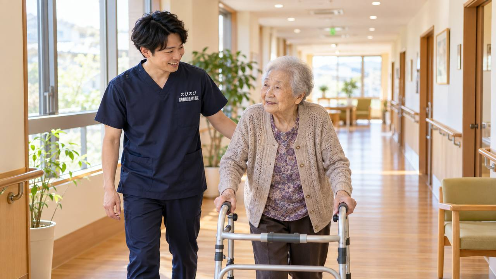

坐骨神経痛でお尻から足にかけて痛みやしびれが続くと、尼崎市内の整形外科や治療院へ通うこと自体が重荷になっていきます。家を出るまでの段差、移動中の姿勢、着いてからの待ち時間。通院は痛む脚にとって、いくつもの関門が重なります。通うのが難しくなった方のために、はり師・きゅう師がご自宅へうかがう訪問鍼灸マッサージという形があります。この記事では、坐骨神経痛に鍼やお灸・手技でできること、先に医療機関へ相談すべきサイン、保険の対象や費用、尼崎市での対応まで整理します。
この記事のポイント
坐骨神経痛で腰から足の痛み・しびれが長く続き、尼崎市内の通院がつらくなった方は、自宅で訪問鍼灸マッサージを受けられます。医師の同意書があり、症状が慢性的なものであれば、はり・きゅうの療養費として医療保険を使えます。費用は1回3,950円の総額に対し、1割負担の方でおよそ395円のご負担です。お住まいの場所で金額が変わることはなく、出張費もかかりません。ただし急な足の脱力や、排尿・排便の異常があるときは、医療機関の受診を優先してください。
尼崎で「お尻から足へ走る痛み」に立ち止まっているあなたへ
朝、布団から起き上がろうとした瞬間に、腰の奥からお尻、太もも裏を通ってふくらはぎまで電気のように走る痛み。阪神尼崎から出屋敷にかけての下町で長く暮らしてきた方、大庄や小田といった南部の地域で自転車を足がわりにしてきた方から、こうした片脚だけのしびれや痛みのご相談をよくいただきます。坐骨神経痛や腰から足にかけての不調は、立ち上がる時、歩き出しの一歩目、前かがみで台所に立った時など、生活のふとした動作が引き金になりやすいのが特徴です。
尼崎は運河沿いに工場が並び、ものづくりのまちとして働いてきた世代が今も元気に暮らす土地です。重い荷物を持ち、中腰の姿勢を何十年も続けてきた腰は、それだけ酷使されています。「歳のせいだから」と我慢を重ねるうちに、いつのまにか座っているだけでも足がだるい、という方もよくいらっしゃいます。まずはご自身の痛みがどこから来ているのか、落ち着いて向き合うことから始めましょう。
その痛み、どこから来ている？坐骨神経痛のサインと注意点
坐骨神経痛は病名というより、お尻から太もも裏、ふくらはぎ、時に足先まで走る痛みやしびれの「状態」を指す言葉です。多くは腰椎まわりの神経が刺激されて起こり、片脚だけに症状が出やすいこと、座り続けた後や立ち上がりざま、歩き出しや前かがみで強まること、そして体が冷えるとつらさが増すことが、よくあるサインです。塚口や武庫之荘の閑静な住宅街にお住まいの方でも、冬場の底冷えで症状がぶり返した、という声を毎年のように伺います。症状のより詳しい見分け方は「坐骨神経痛・長引く腰の痛み」で掘り下げていますので、あわせてご覧ください。
ただし、急に脚に力が入らなくなる、両脚が同時にしびれる、排尿や排便のコントロールがしにくいといった症状があるときは、話が別です。これらは緊急性の高い状態が隠れていることがありますので、施術より先に整形外科などの医療機関を受診してください。訪問での鍼灸マッサージは、そうした医療的な処置を必要としない、慢性的につらい痛みと付き合っていく方のための選択肢だとお考えいただければと思います。
通うのがつらいなら、こちらから伺います
痛みが強い時ほど、JR尼崎や立花、阪急園田の駅前まで出て治療院に通うこと自体が大きな負担になります。歩き出しの一歩がつらい、電車の揺れで足に響く。そんな時こそ、ご自宅で受けられる訪問施術の出番です。のびのび訪問施術院では、鍼・きゅう・マッサージと、寝たきり予防のための機能訓練を、住み慣れたお部屋で組み合わせて行います。機能訓練は鍼灸に加えて行いますので、痛みをやわらげながら、少しずつ動ける体づくりを目指せます。これらに追加の料金はかかりません。
医療保険（療養費）でのはり・きゅうは、神経痛・リウマチ・頸肩腕症候群・五十肩・腰痛症・頸椎捻挫後遺症の6つの疾病が対象です。坐骨神経痛や腰から足への痛みは、この「神経痛」や「腰痛症」の枠で該当しうるものです。あくまで痛みとうまく付き合っていくための施術であり、病気そのものを治すものではなく、効き方には個人差があることは、あらかじめお伝えしておきます。尼崎市での訪問対応の全体像は「尼崎市の訪問鍼灸マッサージ」で詳しくご紹介しています。
料金と保険のしくみは、シンプルです
ご利用には医療保険（療養費）と、あわせて医師の同意書が必要です。要介護認定は必要ありません。介護保険を使っている方でも、その限度額とは別枠なので併用いただけます。1回の施術の総額は3,950円で、自己負担は1割の方で約395円です。週2回のペースで続けた場合、1割の方の目安は月約3,160円ほど。エリア内であれば出張費はかからず、料金は一律です。
なお、同じ部位について医療保険のリハビリと鍼灸を同じ月に同時に算定することはできません。この点だけご注意ください。料金のより細かい内訳や自己負担の考え方は「料金はいくら？医療保険の自己負担額と仕組み」で丁寧に解説しています。
尼崎のまちで、あなたの一歩を支えたい
下町の路地から新しい住宅街まで、尼崎にはさまざまな暮らしがあります。工場のまちで腰を酷使してきた方も、子育てや家事で無理を重ねてきた方も、痛みの背景はひとりひとり違います。ですから、その方の生活と体の状態にあわせて、無理のないところから施術を組み立てていきます。焦らず、一歩ずつ。歩き出しの一歩が少しでも軽くなるよう、じっくり伴走させてください。
「うちの地域まで来てもらえるのかな」と気になる方は、「対応エリアはどこまで来てもらえる？」をご確認ください。尼崎市内であれば、南部の大庄・小田から北部の塚口・武庫之荘、園田のあたりまで、幅広く訪問しています。まずはお気軽に、今のおつらさをお聞かせください。
よくある質問
尼崎市で坐骨神経痛でも保険を使えますか？
慢性的に続く坐骨神経痛について、かかりつけの医師が鍼やお灸での治療を必要と認めて同意書を書いてくれ、かつ通院がむずかしい状態であれば、医療保険の対象になります。尼崎市のかかりつけ医にお願いでき、同意書の段取りは当院が整えます。まずは今の症状と、通院がどのくらい負担になっているかをお聞かせください。
何年も続いている坐骨神経痛でも受けられますか？
急に起きた強い痛みではなく、慢性的に続いている状態が対象になります。年月が経っている方ほど、腰から足先までの状態をまとめて確かめる意味があります。ただし急に足に力が入らない、排尿・排便に異常があるといったときは、まず医療機関を受診してください。
脚のしびれにも効きますか？
腰やお尻のこわばりをゆるめてめぐりを助けると、しびれの感じ方が変わったと話される方がいます。神経を刺激している筋肉の緊張をゆるめること自体が助けになる場合もあります。効果の出方には個人差があります。
費用は1回いくらですか？出張費はかかりますか？
1回の施術が総額3,950円で、自己負担は割合の分だけです。1割の方でおよそ395円が目安です。別途の出張費（出張料・交通費）はかからず、エリア内はどこでも同額です。お支払いは月単位でまとめてお願いし、その月の内訳のわかる明細をお渡ししています。
尼崎市のどこまで来てもらえますか？
尼崎市内全域に伺います。JR・阪神・阪急神戸線の沿線や市南部の下町方面など、市内であれば地域を問わず対応します。有料老人ホームやサービス付き高齢者向け住宅にお住まいの方のところにも伺えますので、お住まいの地域を教えてください。
要介護認定を受けていなくても受けられますか？
受けられます。訪問鍼灸マッサージは医師の同意にもとづく医療保険を使うもので、介護保険の要介護認定とは別の仕組みです。認定を受けていない方でも、医師が鍼やお灸を必要と認めれば対象になります。介護保険の限度額とも別枠です。
尼崎市でひとり暮らしでも受けられますか？
はい。ひとり暮らしの方も受けられます。急なときのご家族などの連絡先をうかがい、安心して続けられるようにします。ご本人がお電話に出るのが難しければ、離れて暮らすご家族からのご相談だけでも構いません。
腰から足のケアは毎回同じ人が来ますか？
できるだけ同じ担当者が続けて伺います。腰からお尻、脚全体の状態を同じ目で続けて見られるので、変化に気づきやすく、その方に合わせたケアを重ねていけます。同じ曜日・時間帯で伺うことが多く、生活のリズムにも組み込みやすくなります。